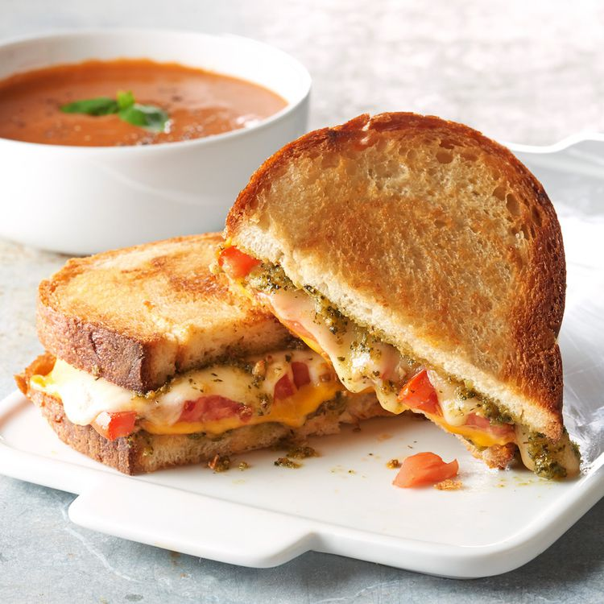

Pesto Grilled Cheese

Description
I first had this pesto grilled cheese sandwich at a small restaurant and immediately went home to duplicate the recipe. I've been making my grilled cheese sandwiches this way ever since!
Ingredients
- 1 tablespoon softened butter, divided
- 2 slices Italian bread
- 1 tablespoon prepared pesto sauce, divided
- 1 slice provolone cheese
- 2 slices tomato
Steps
- Spread butter on one side of a slice of bread and place it, buttered side down, into a nonstick skillet over medium heat.
- Spread 1/2 of the pesto sauce on the unbuttered side of the bread. Stack provolone cheese, and tomato on top of pesto, in that order.
- Spread remaining pesto sauce on second slice of bread. Place it pesto side down onto sandwich in the pan. Butter the top side of bread.
- Gently fry sandwich, flipping once, until both sides are golden brown and cheese has melted, about 5 minutes per side.